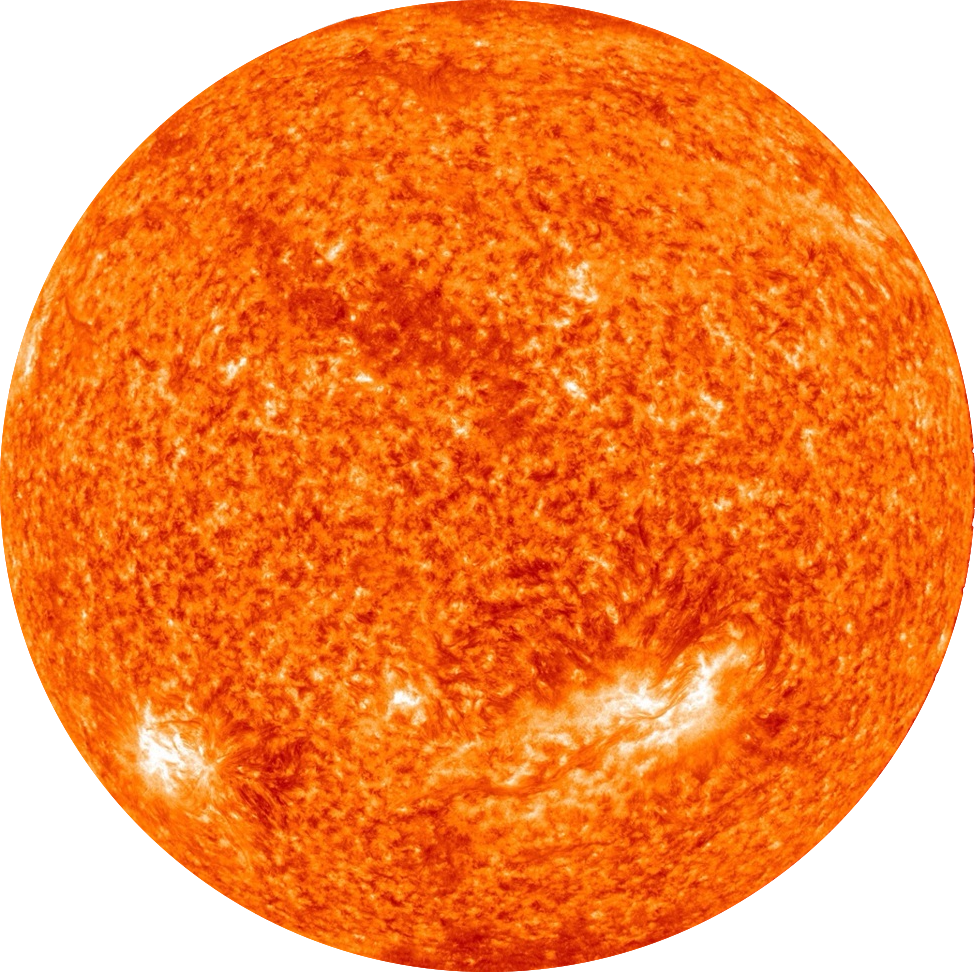
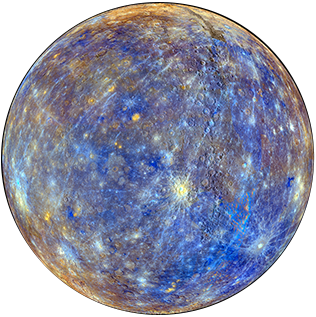
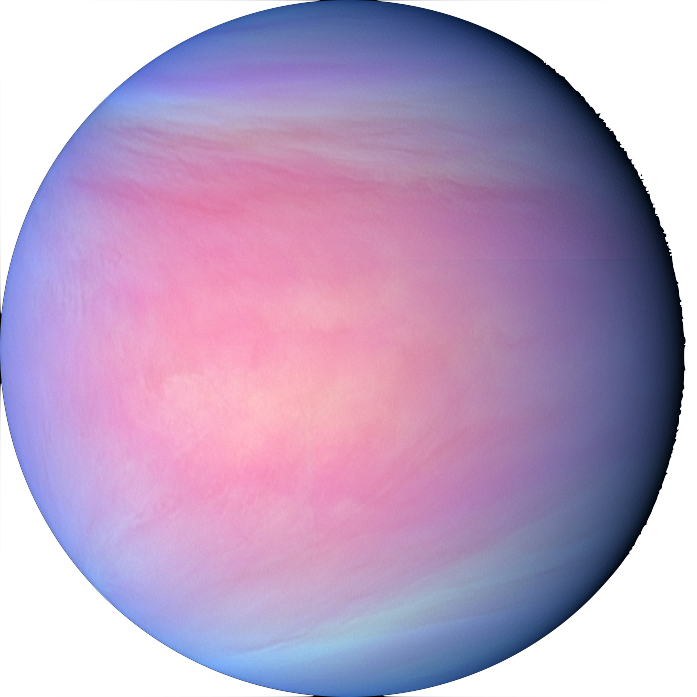
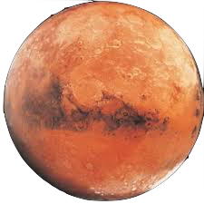
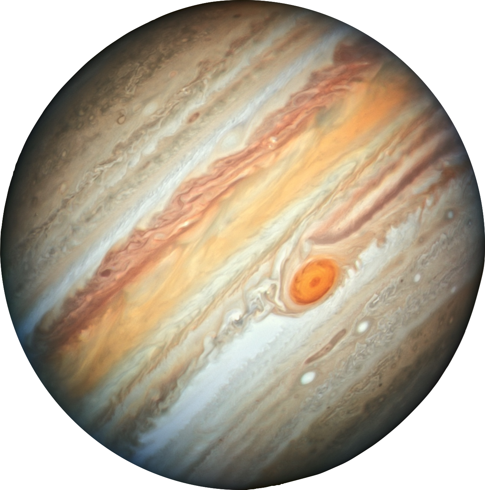
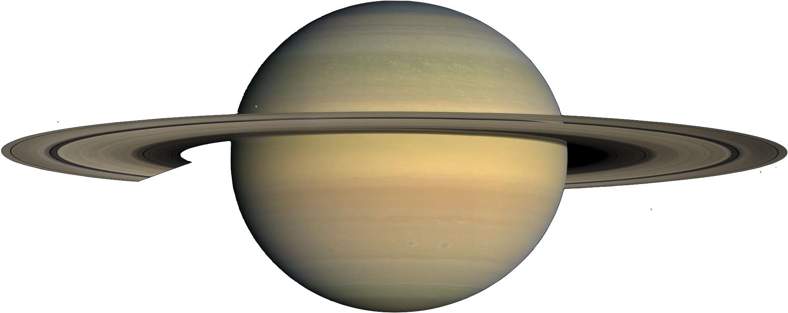
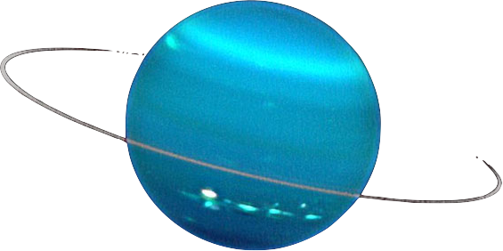
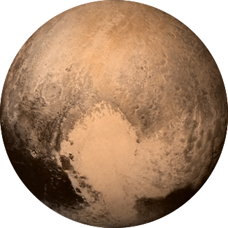
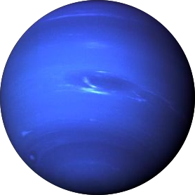

PLANETS!
by Emma Johnson
Sizes of planets are scaled 1cm:7,000km
Distances between planets are scaled 1cm:25,000,000km
Hover over the planets for more info
Note: axes are not rotated to match true degree of rotation relative to the sun

Sun (decreased in size by 10x)
Diameter: 1,392,700 km

Mercury
Equatorial Diameter: 4,879 km
Distance From The Sun: 65.548 million km
Distance From Venus: 42.057 million km

Venus
Equatorial Diameter: 12,104 km
Distance From The Sun: 107.61 million km
Distance From Mercury: 42.057 million km
Distance From Earth: 42.278 million km

Mars
Equatorial Diameter: 6,792 km
Distance From The Sun: 220.25 million km
Distance From Earth: 70.337 million km
Distance From Jupiter: 556.683 million km

Jupiter
Equatorial Diameter: 142,984 km
Distance From The Sun: 776.94 million km
Distance From Mars: 556.683 million km
Distance From Saturn: 719.617 million km

Saturn
Equatorial Diameter: 120,536 km
Distance From The Sun: 1.4967 billion km
Distance From Jupiter: 719.617 million km
Distance From Uranus: 1.466 billion km

Uranus
Equatorial Diameter: 51,118 km
Distance From The Sun: 2.9629 billion km
Distance From Saturn: 1.466 billion km
Distance From Pluto(min): 1.474 billion km

Pluto(min)
Equatorial Diameter: 2,370 km
(Minimum) Distance From The Sun: 4.437 billion km
Distance From Uranus: 1.474 billion km
Distance From Neptune: 39.98 million km

Neptune
Equatorial Diameter: 49,528 km
(Minimum) Distance From The Sun: 4.4768 billion km
Distance From Pluto(min): 39.98 million km
Distance From Pluto(max): 2.899 billion km
Pluto(max)
Equatorial Diameter: 2,370 km
(Maximum) Distance From The Sun: 7.376 billion km
Distance From Neptune: 2.899 billion km
 Earth
Earth